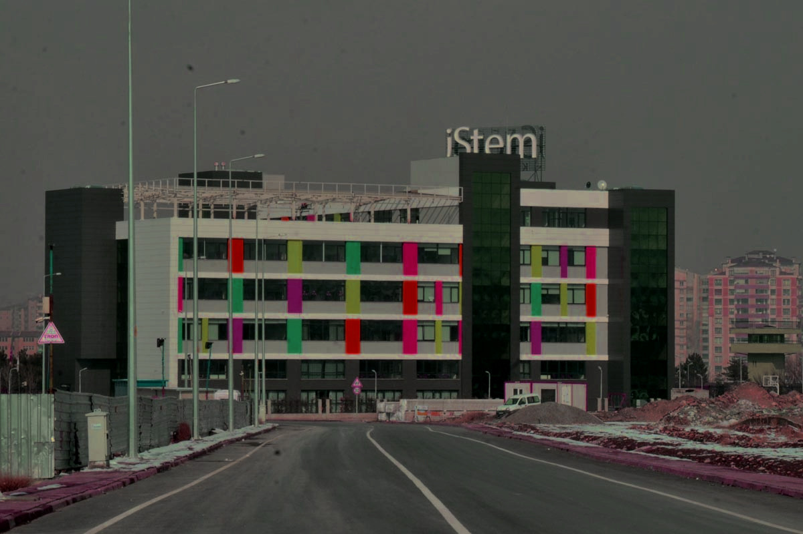

Kayseri iStem Koleji
-ANASAYFA-
Ana Sayfa
Atölyeler
Laboratuvarlar
Okul Kadrosu
Benim Hakkımda

STEM+A sistemi hakkinda daha fazla bilgi sahibi olmak icin
buraya
tiklayiniz.
Kayseri iStem Okullari
Okul web sitesi: www.istemegitim.com